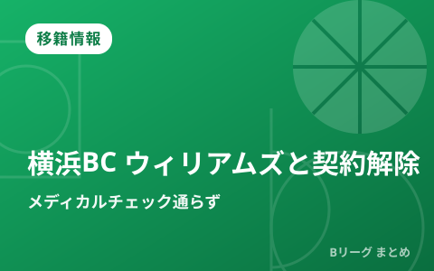
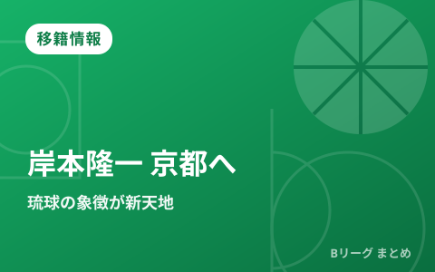
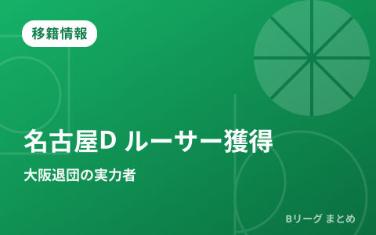
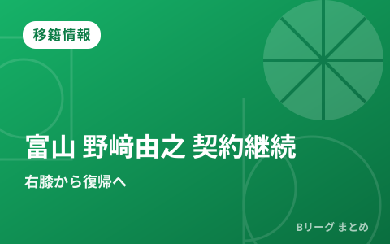
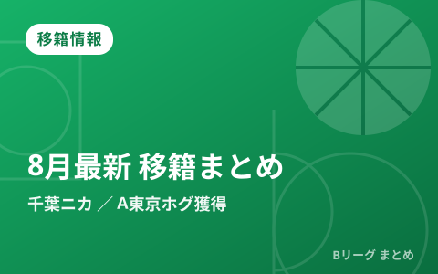
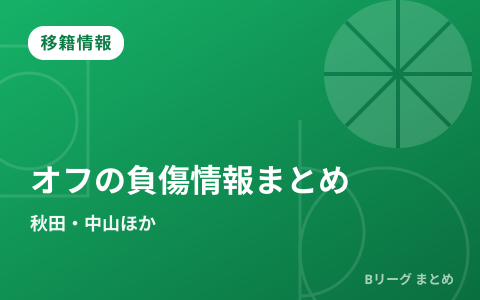

公式・メディアの新着
もっと見る ›配信元の見出しとリンクのみを自動収集しています。タップすると元記事が開きます。
2026.08.29
移籍情報
【ワールドカップ2027アジア予選】男子日本代表はグループFで2位をキープして本戦出場権獲得圏内、首位のレバノンとは1勝差
2026.08.28
移籍情報
長崎ヴェルカが練習生として加入していた大友隆太郎と短期契約を締結、プレシーズンマッチを戦うための戦力として補強
移籍情報
自由交渉選手リストの公示
2026.08.26
移籍情報
横浜ビー・コルセアーズがアイザイア・リバースと契約を締結、昨シーズンはサンズの2ウェイ契約選手として36試合に出場
2026.08.20
移籍情報
川崎ブレイブサンダースがキース・ブラクストンとの選手契約を双方合意で解除、近日中に代替選手を発表へ
2026.08.19
移籍情報
横浜ビー・コルセアーズがドノバン・ウィリアムズと契約解除の方向へ、メディカルチェックをパスできず選手登録が不可となる
2026.08.13
移籍情報
東京サンロッカーズがラウリー・アルキンズを獲得、マーカス・ジョージズ=ハントはコンディション不良などを理由に契約解除
2026.08.12
移籍情報
長崎ヴェルカが得点力が魅力の実力派ウイング、リーヴァイ・ランドルフを獲得「新たな挑戦をとても楽しみにしています」
2026.08.10
移籍情報
富山グラウジーズがアミール・シムズと北海道でプレー経験のあるダラル・ウィリスジュニア、2人のパワーフォワードを獲得
移籍情報
アルバルク東京がラクラン・オルブリッチと契約を締結、昨シーズンは河村勇輝とブルズで共闘したビッグマン
移籍情報
富山グラウジーズがブライアン・アンゴラと契約締結、コロンビア代表のエースとしてワールドカップ予選にも出場
2026.08.05
移籍情報
大阪エヴェッサが3度のアキレス腱断裂からの復帰を目指す橋本拓哉と契約を締結「もう一度コートに立ちたい」
2026.08.04
移籍情報
京都ハンナリーズへの電撃移籍を決めた岸本隆一の覚悟「自分のエゴというちっぽけなことのために、京都に来たわけではない」
移籍情報
名古屋ダイヤモンドドルフィンズが大阪を退団していたライアン・ルーサーを獲得「最高のチームメイトになれるよう頑張ります」
2026.08.03
移籍情報
富山グラウジーズが野﨑由之と契約を継続、昨シーズンに右膝前十字靭帯を損傷「1日1日を大切に努力していきたいです」
2026.08.01
移籍情報
今オフに複数年契約を結んだ秋田ノーザンハピネッツの『心臓』、中山拓哉が全治未定の左膝骨挫傷
最終更新:
2026年08月31日 08:18
移籍情報

移籍情報
横浜BCが外国籍ウィリアムズと契約解除 メディカルチェック通らず、新戦力獲得へ

移籍情報
岸本隆一が京都ハンナリーズへ移籍 琉球の象徴が新天地で日本一を目指す

移籍情報
名古屋Dが大阪退団のライアン・ルーサーを獲得 昨季平均16得点のPF／C

移籍情報
富山グラウジーズが野﨑由之と契約継続 右膝ケガから復帰へ

移籍情報
【8月最新】B.PREMIER移籍まとめ 千葉がニカ、A東京がホグ・ジョンソンを獲得

移籍情報
2026年オフの主な負傷情報まとめ 秋田・中山拓哉が左膝骨挫傷と発表

移籍情報
【6月25日の契約情報まとめ】Bプレミア参戦クラブが新戦力を続々獲得、琉球から宇都宮への移籍も

移籍情報
【6月下旬の移籍まとめ】千葉が菅原、A東京が飯田を獲得 自由交渉リストの動きも活発
オフシーズンの契約・移籍は日々更新されます。クラブ別の新加入・契約更新の一覧を順次追加していきます。